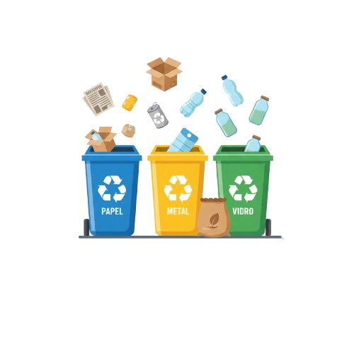
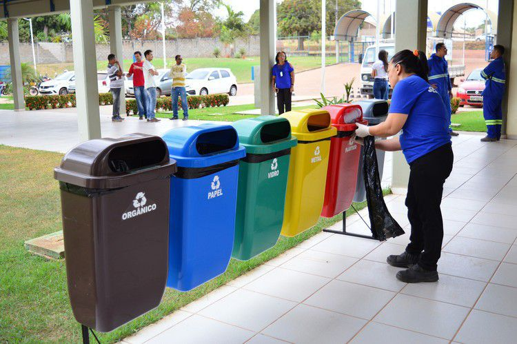
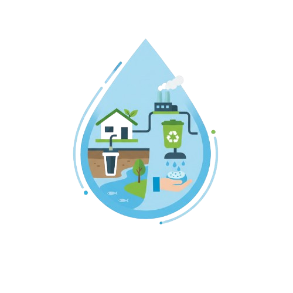
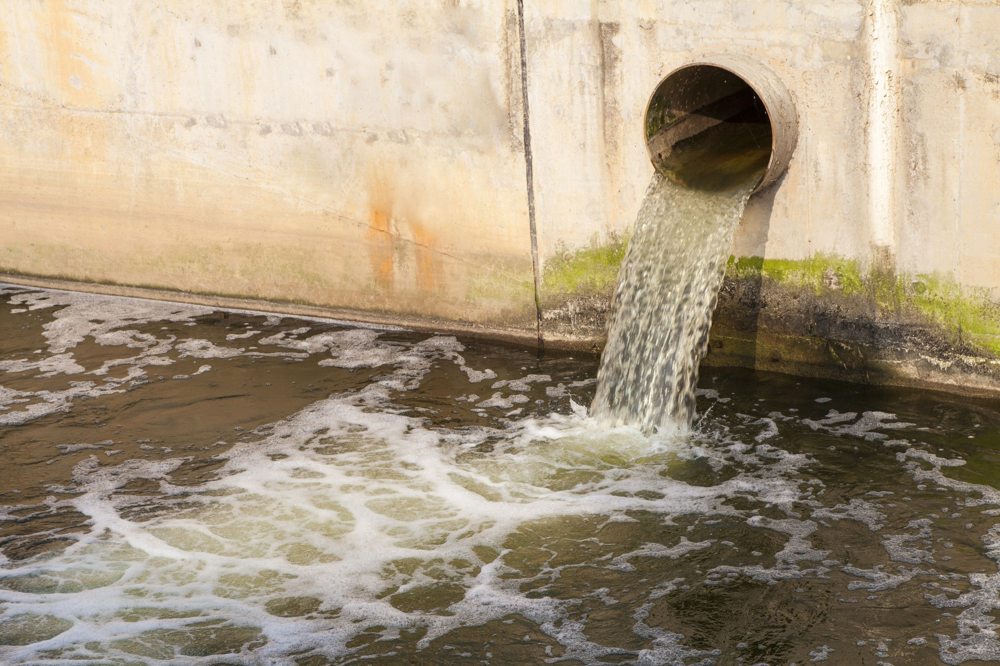

Pequenas atitudes, grandes transformações 🌱
No Brasil e no mundo, muitos desafios ambientais se concentram no manejo dos resíduos e no acesso ao saneamento. Nossa plataforma visa conscientizar, promover práticas sustentáveis e apresentar soluções que conectem pessoas, tecnologias e políticas públicas para um futuro mais limpo e justo.
Acessar plataformaReciclagem Responsável
Segundo dados do SNIS e reportagens recentes, apenas cerca de 2% dos resíduos sólidos urbanos (RSU) produzidos no Brasil são efetivamente reciclados. Isso representa um desperdício enorme de materiais que poderiam voltar à cadeia produtiva.

Coleta Seletiva
A coleta seletiva consiste em separar na fonte (em casa, nas empresas) os materiais recicláveis (papel, plástico, vidro, metal), para que possam ser reaproveitados.

Reciclagem de Plástico
Plásticos descartados inadequadamente acabam em rios e mares, causando impacto ambiental grave. Reutilizar e reciclar é essencial para reduzir essa poluição.

Saneamento como base da dignidade
De acordo com dados do SNIS (Sistema Nacional de Informações sobre Saneamento), cerca de 16% da população brasileira não tem acesso à água tratada, e 47% não estão ligados à rede de esgoto. Isso se traduz em milhões de pessoas sem condições adequadas para higiene, saúde e bem-estar.

A falta de saneamento contribui para doenças como diarreia, parasitoses, hepatite A e leptospirose. Estudos mostram que para cada R$ 1,00 investido em saneamento, há uma economia de até R$ 4,00 em gastos com saúde pública.
Impacto & Dados Reais
• O Brasil lançou o Projeto Tietê, programa de despoluição do rio Tietê, que já consumiu bilhões e teve fases de avanços e desafios.
• Em 2019, 15 projetos ligados a água e saneamento foram finalistas no “Prêmio Cases de Sucesso ODS 6” no Brasil, demonstrando que iniciativas privadas compartilham soluções socioambientais relevantes.
• A política brasileira de resíduos sólidos (Lei 12.305/2010) estabelece a responsabilidade compartilhada: geradores, consumidores, empresas e governos devem atuar juntos. Porém, segundo reportagens, muitos municípios ainda destinam até 40% dos resíduos de forma inadequada (lixões).
Conexão com os ODS da ONU
Inspiramo-nos nos seguintes Objetivos de Desenvolvimento Sustentável (ODS) para orientar nossas ações:
- ODS 6: Água potável e saneamento — garantir acesso universal à água e saneamento seguros.
- ODS 12: Consumo e produção responsáveis — reduzir geração de resíduos, promover reciclagem e reutilização.


Nosso propósito é contribuir para essas metas, promovendo educação ambiental, boas práticas e engajamento comunitário.
Saiba mais sobre as ODS